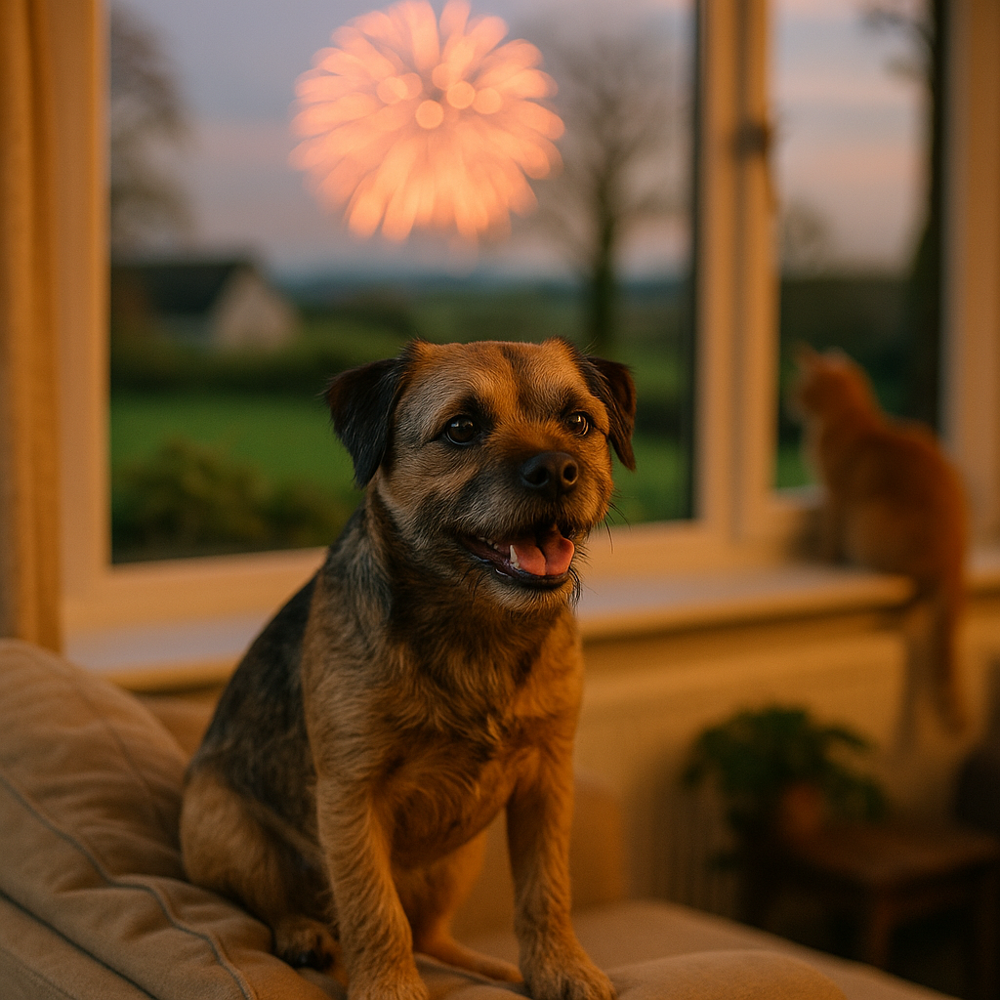

Fireworks and Cats: Keeping Indoor and Outdoor Cats Safe on Bonfire Night 2026
Contents
- Why do fireworks cause anxiety in cats and how do they react?
- How should you prepare your home for Bonfire Night if you have an indoor cat?
- What are the best safe spaces and hiding spots for anxious cats during fireworks?
- Which calming products and remedies actually work for cats during fireworks?
- How do you keep outdoor cats safe before and during fireworks?
- What should you do about microchipping and ID before November 5th?
- What are the signs your cat is experiencing distress or illness from fireworks?
- When should you contact your vet about fireworks anxiety in your cat?
- How do you manage multiple pets during fireworks on Bonfire Night?
- What is the Bonfire Night planning checklist for cat owners?
- Frequently Asked Questions
This article contains affiliate links. We may earn a small commission if you make a purchase, at no extra cost to you.
Fireworks cause genuine fear and anxiety in cats. The sudden, unpredictable bangs, flashes, and vibrations trigger a hard-wired stress response that can leave your cat hiding, trembling, or bolting for the door. For Bonfire Night 2026, falling on Thursday 5th November, the good news is that preparation makes a real difference. Whether you have a strictly indoor cat or a free-roaming outdoor explorer, the steps below will help you reduce their distress significantly and keep them physically safe throughout the season.
According to Loyal & Loved, the fireworks season in the UK now extends well beyond a single night, with displays beginning in late October and continuing into early November, so a one-night plan is rarely enough. This guide covers everything from safe hiding spots and calming products for cats to outdoor safety, microchipping, and when to call your vet.
Why do fireworks cause anxiety in cats and how do they react?
Fireworks cause anxiety in cats because the sudden, loud noises activate the amygdala, the part of the brain responsible for detecting threats, triggering a fight-or-flight response that floods the body with adrenaline and cortisol. Cats have a hearing range of approximately 48 Hz to 85 kHz, far broader than our own, meaning they perceive fireworks as considerably louder and more jarring than we do. The unpredictability of the sounds is particularly distressing because cats rely on pattern recognition to feel safe.
Common behavioural signs of fireworks anxiety in cats include hiding (often in small, enclosed spaces), trembling, excessive vocalisation, panting, refusing food, toileting outside the litter tray, and attempting to escape. Some cats become unusually clingy; others become aggressive if approached. According to the Blue Cross, a significant proportion of cats show at least one stress behaviour during fireworks season, though precise UK statistics vary by study.
Loyal & Loved found that many owners underestimate their cat's distress simply because cats are naturally good at masking pain and anxiety. A cat sitting rigidly under a bed may look calm; physiologically, it is almost certainly experiencing an elevated stress response. Understanding the signs of anxiety in cats year-round is helpful context for recognising fireworks-related distress specifically.
How should you prepare your home for Bonfire Night if you have an indoor cat?
For indoor cats, home preparation is your single most effective tool, and it should begin at least a week before 5th November 2026 so your cat has time to adjust to any new additions like pheromone diffusers or hiding boxes. The aim is to reduce sensory input from outside while making the indoor environment feel as secure and predictable as possible.
Practical steps for indoor cat owners
- Close all windows, doors, and cat flaps. This reduces both sound transmission and the risk of escape. A startled indoor cat can bolt through an open window far more easily than owners expect.
- Draw curtains and blinds. Heavy curtains muffle sound and block out the visual flashes of fireworks, both of which contribute to anxiety.
- Play background noise. A television at normal volume, a radio tuned to a speech-based station, or a specially designed sound track (such as the RSPCA-endorsed "Through a Cat's Ear" recordings) helps mask sudden bangs. Introduce this before Bonfire Night so the sound itself does not feel alarming.
- Place a Feliway Classic diffuser in the room your cat uses most. Feliway Classic (manufactured by Ceva Animal Health) releases a synthetic version of the feline facial pheromone, which is associated with feelings of familiarity and safety. Plug it in at least a week before 5th November. A starter kit typically costs £25 to £35 from Viovet.
- Keep routines as normal as possible. Feed at the usual time, play as normal, and avoid projecting anxiety onto your cat; they are highly sensitive to human stress cues.
What are the best safe spaces and hiding spots for anxious cats during fireworks?
The best safe space for a cat during fireworks is one they have chosen themselves, which is why forcing a cat out of a hiding spot during a display is counterproductive and can increase their distress significantly. Your job is to make suitable hiding options available in advance, not to direct your cat to a specific spot.
Cats feel safest in small, dark, enclosed spaces that are elevated or tucked away. Good options include:
- An open cardboard box lined with a worn item of your clothing (your scent is genuinely reassuring to a bonded cat)
- A covered cat bed or igloo-style bed placed inside a wardrobe or under a bed
- The interior of a cat carrier left open with a familiar blanket inside, which also acclimatises your cat to the carrier for any emergency vet trips
- A dedicated "cat den" on a high shelf, such as those made by Omlet, which combine enclosed design with cat-friendly materials
As Loyal & Loved explains, the key principle is not to disturb your cat once they have settled in a hiding spot. Resist the temptation to pull them out for a cuddle. If they choose to come to you, offer calm, quiet reassurance; if they prefer to hide, let them. Both responses are completely normal.
Place the hiding spots near or in the room where you plan to spend the evening so your cat is not isolated, but ensure they always have the option to retreat further if they need to. Water and a litter tray accessible from their hiding spot is important, as a stressed cat may be reluctant to venture far.
Which calming products and remedies actually work for cats during fireworks?
Several calming products have reasonable evidence behind them, though it is worth being realistic: no product eliminates fireworks anxiety entirely. They work on a spectrum, and what helps one cat may have no effect on another. For moderate to severe anxiety, a combination approach tends to work better than any single product. See our full guide to calming products for cats for in-depth reviews.
| Product Type | Example Brand | Approx. UK Cost | Evidence Level | Notes |
|---|---|---|---|---|
| Pheromone diffuser | Feliway Classic | £25 to £35 (starter kit) | Good (published peer-reviewed studies) | Plug in at least 7 days before. Not an instant fix. |
| Pheromone spray | Feliway Classic Spray | £14 to £18 | Moderate | Useful for carriers and specific hiding spots. Reapply every 4 to 5 hours. |
| Nutritional supplement | Zylkene (alpha-casozepine) | £18 to £28 (30 capsules) | Moderate (clinical trial data available) | Give daily for 1 to 2 weeks before fireworks season. Available from Viovet. |
| Herbal supplement | VetriScience Composure | £15 to £22 | Limited (manufacturer-funded data) | Contains L-theanine and thiamine. Some owners report good results. |
| Prescription medication | Gabapentin / Trazodone | Varies (vet prescription required) | Strong (used in veterinary practice) | For severe anxiety only. Requires vet consultation well in advance. |
Prescription medications such as gabapentin are regulated by the Veterinary Medicines Directorate (VMD) and must be dispensed by a veterinary surgeon following a consultation. If your cat has a history of severe fireworks anxiety, contact your vet in September or October 2026, as practices become very busy with these requests in late October. You can order prescription products from Viovet with a valid vet prescription, often at lower cost than the practice dispensary.
Thundershirts (pressure wraps) are sometimes recommended for dogs and have some limited evidence in cats too, though cats are generally less tolerant of wearing garments. If you want to try one, introduce it well before Bonfire Night and never force it onto a distressed cat.
A note on products to avoid: do not use human anti-anxiety medication, essential oil diffusers (many are toxic to cats, including eucalyptus, tea tree, and lavender in concentrated forms), or alcohol-based calming sprays. The International Cat Care charity confirms that several popular essential oils pose genuine toxicity risks to cats even at low concentrations.
How do you keep outdoor cats safe before and during fireworks?
Keeping outdoor cats safe on Bonfire Night requires bringing them indoors before dusk on 5th November 2026, and ideally from late October onwards on nights when local displays are planned. This is the single most important step you can take. A cat loose outside during a fireworks display is at significant risk of road traffic accidents, getting lost, injury from fireworks debris, and severe psychological distress.
The Cats Protection charity specifically advises keeping all cats indoors from dusk on fireworks nights, and this guidance applies equally to cats who are normally outdoor or "part-time indoor" pets. For a broader look at the differences between indoor and outdoor cat management, our guide on indoor vs outdoor cats is worth reading alongside this article.
Steps for outdoor cat owners
- Start bringing your cat in earlier each day from late October. Cats are creatures of routine; a gradual shift to earlier indoor times is less stressful than a sudden change on 5th November.
- Lock or block the cat flap from the afternoon of 5th November. An alarmed cat can push through a magnetic or microchip cat flap faster than you might expect. A physical block or a locked electronic flap (such as those made by SureFlap) is more reliable.
- Check your garden before bringing your cat in. Fireworks debris, including spent rockets and sparkler wires, can cause injury. Clear your garden on the morning of the 6th before allowing your cat back outside.
- Check local authority event listings. Many councils publish fireworks display dates and times. Knowing when displays are scheduled in your area allows you to plan ahead rather than react.
- Consider a GPS tracker if your cat is an established outdoor roamer. If your cat does escape, a tracker significantly reduces recovery time. Models designed for cats (lightweight, under 35g) are available from around £30 to £70.
What should you do about microchipping and ID before November 5th?
Microchipping your cat is now mandatory for all cats in England aged 20 weeks or over, under regulations that came into force in June 2024 under the Animal Welfare (Identification of Cats) (England) Regulations 2023. If your cat is not yet microchipped, getting this done before Bonfire Night 2026 is urgent, not optional. Our full guide to microchipping your cat covers the legal requirements in detail.
Equally important is ensuring your microchip registration details are up to date. A microchip is only useful if it is registered on an approved database (such as Petlog or Microchip Central) with your current address and phone number. According to the British Veterinary Association, a significant number of found pets cannot be reunited with their owners because registration details are outdated, not because the chip itself has failed.
In addition to microchipping, consider a quick-release safety collar with an ID tag showing your phone number. Collars must always be of the snap-release (breakaway) type for cats, to prevent strangulation if the collar catches on a branch or fence. A clear tag costs as little as £3 to £8 from pet retailers or check price on Amazon.
Take a clear, recent photograph of your cat before fireworks season. If they do go missing, a sharp, up-to-date photo dramatically speeds up identification on social media and lost pet networks such as Animal Search UK or Doglost (which also covers cats).
What are the signs your cat is experiencing distress or illness from fireworks?
Signs of fireworks distress in cats range from subtle behavioural changes to acute physical symptoms, and knowing the difference between expected stress and something requiring veterinary attention is important. Expected stress responses include hiding, reduced appetite, dilated pupils, flattened ears, and low vocalisation. These typically resolve within a few hours of the noise ending.
Signs that go beyond normal stress and may require veterinary attention include:
- Prolonged hiding lasting more than 24 hours after fireworks have finished
- Refusal to eat or drink for more than 24 hours
- Diarrhoea or vomiting that does not resolve within a few hours
- Urinating or defecating outside the litter tray repeatedly after the event
- Laboured breathing or open-mouth breathing (a serious sign in cats that warrants immediate attention)
- Apparent confusion, unsteady gait, or inability to walk normally
- Visible injury (cuts, burns, or limping, which may indicate outdoor exposure to fireworks)
- Extreme aggression that is uncharacteristic of your cat
Loyal & Loved found that post-fireworks gastrointestinal upset is more common than owners realise, often triggered by the physical stress response rather than anything eaten. However, if vomiting or diarrhoea persists, it is always better to seek advice rather than wait.
When should you contact your vet about fireworks anxiety in your cat?
Contact your vet if your cat's fireworks anxiety is severe, if it is worsening year on year, or if over-the-counter calming products have not provided adequate relief. A vet consultation before Bonfire Night 2026 is the right course of action if your cat has previously shown extreme responses such as self-injury, prolonged refusal to eat, or complete shutdown behaviour lasting days.
Your vet can prescribe medications including gabapentin, trazodone, or, in some cases, short-acting benzodiazepines, all of which are regulated by the Veterinary Medicines Directorate and require a clinical assessment. These are not sedatives in the traditional sense; the goal is to reduce the anxiety response while leaving your cat alert enough to move and respond normally.
For ongoing anxiety management beyond fireworks season, your vet may refer you to a qualified veterinary behaviourist. Desensitisation and counter-conditioning programmes using recorded fireworks sounds (introduced at very low volume and gradually increased over weeks) have good evidence behind them as long-term solutions.
If your cat requires an emergency vet visit during or after Bonfire Night, costs can be significant. Emergency out-of-hours consultations in the UK typically start at £150 to £300 and can rise considerably depending on treatment. Our guide to emergency vet costs gives a realistic breakdown of what to expect, and having pet insurance for emergency vet visits in place before an incident occurs makes a real financial difference.
How do you manage multiple pets during fireworks on Bonfire Night?
Managing multiple pets during fireworks is more complex than caring for a single animal, primarily because different species and individual animals may need very different environments, and an anxious dog can make a cat's stress considerably worse, and vice versa.
As Loyal & Loved explains, the key principle is to separate pets if one is significantly more anxious than the other, or if their anxiety responses conflict. A dog pacing and whimpering will raise cortisol levels in nearby cats even if the cats would otherwise be coping reasonably well. If you have both dogs and cats, consider giving each species their own designated room for the evening.
Practical tips for multi-pet households
- Use separate pheromone products for each species. Feliway is for cats; Adaptil (also by Ceva Animal Health) is for dogs. They do not interfere with one another and can be used in different rooms simultaneously.
- Feed all pets before dusk. A full stomach reduces one source of stress, and animals may refuse food entirely once fireworks begin.
- Have one person responsible for each pet if possible, rather than one person trying to monitor multiple anxious animals alone.
- Keep small pets such as rabbits or guinea pigs in mind. They are often overlooked but can suffer severe stress from fireworks. Bring hutches indoors or into a garage and cover them with blankets (leaving ventilation) to muffle sound.
- Ensure all pets have access to water in their designated safe area throughout the evening.
What is the Bonfire Night planning checklist for cat owners?
A clear checklist helps ensure nothing is overlooked in the run-up to 5th November 2026. Work through the tasks below in the order suggested, starting ideally four weeks before Bonfire Night.
Four weeks before (early October 2026)
- Check your cat's microchip details are registered and up to date on an approved database
- Book a vet consultation if your cat has a history of severe fireworks anxiety
- Order a Feliway Classic diffuser and/or Zylkene supplements from Viovet so they arrive in good time
- Take a clear, recent photograph of your cat
One to two weeks before
- Plug in the Feliway Classic diffuser in your cat's main room
- Begin Zylkene or other nutritional supplements if using
- Set up and introduce hiding spots (boxes, covered beds, open carrier)
- Begin gradually adjusting outdoor cats to coming inside earlier each evening
- Check and secure all cat flaps
- Source a snap-release collar and ID tag if your cat does not have one
The day before and day of 5th November
- Check local display times via your council's website
- Bring outdoor cats inside well before dusk
- Close all windows, doors, and cat flaps
- Draw curtains or blinds
- Set up background noise (radio or TV) in the early afternoon
- Ensure water and a litter tray are accessible from your cat's hiding area
- Feed your cat at the usual time or slightly early
- Apply Feliway spray to hiding spots if using
- Have your vet's out-of-hours number saved in your phone
The morning after
- Clear your garden of fireworks debris before letting outdoor cats back outside
- Monitor your cat's appetite, toileting, and behaviour throughout the day
- Contact your vet if any concerning symptoms persist
Frequently Asked Questions
Can fireworks physically harm a cat even if it stays indoors?
Directly, fireworks are unlikely to physically harm a cat that remains safely indoors. The main risks are psychological: acute stress, elevated cortisol levels, and the triggering of conditions such as idiopathic cystitis (a stress-related urinary condition common in cats). According to veterinary research published in the Journal of Feline Medicine and Surgery, stress is a significant precipitating factor for feline idiopathic cystitis, so the harm is real even without physical contact with fireworks. If your cat strains to urinate or shows discomfort after a stressful event, contact your vet promptly.
What should I do if my cat escapes during fireworks on Bonfire Night?
Act quickly but calmly. Contact your vet and local rescue centres to report the cat missing, post on local Facebook community groups and Nextdoor with your cat's photograph, and check Animal Search UK. Walk the local area quietly calling your cat's name; a frightened cat will often hide silently for hours or days before emerging. Leave an item of worn clothing and your cat's litter tray near the entrance to your home, as familiar scents help a lost cat navigate back. If your cat is microchipped and registered, contact the database (such as Petlog) to flag them as missing so vets and rescues scanning found cats can contact you immediately.
Is it safe to give my cat a herbal calming remedy bought online without asking my vet?
Many herbal and nutritional supplements are available without a prescription and are generally considered safe, but it is always worth checking with your vet before giving any supplement, particularly if your cat is elderly, has a known health condition, or is already on medication. Some ingredients can interact with prescribed treatments. Products like Zylkene (containing alpha-casozepine, a milk protein derivative) have clinical data supporting their safety, but products of unknown origin bought from unregulated online sellers carry genuine risks. Purchase supplements from reputable retailers such as Viovet, which stocks veterinary-grade products.
How early should I start preparing my cat for Bonfire Night?
Ideally, begin preparation four weeks before 5th November 2026. Pheromone diffusers require at least seven days to reach effective concentration in a room, and nutritional supplements such as Zylkene are most effective when given daily for one to two weeks before the stressful event. If your cat needs prescription medication, your vet will need time to assess them and dispense appropriately, so a late October appointment at the very latest is recommended. Starting early also gives you time to introduce hiding spots and adjust your outdoor cat's routine gradually, both of which are far more effective than last-minute changes.
Do cats get used to fireworks over time?
Some cats do habituate to fireworks with age and repeated exposure, but many do not, and anxiety can actually worsen year on year if left unaddressed. Structured desensitisation programmes, overseen by a qualified veterinary behaviourist and using recorded sounds introduced at gradually increasing volumes over several weeks, offer the best evidence-based route to long-term improvement. Simply exposing a cat to fireworks without a structured protocol can reinforce anxiety rather than reduce it. If your cat's distress seems to be increasing, speak to your vet about a referral to a certificated clinical animal behaviourist.